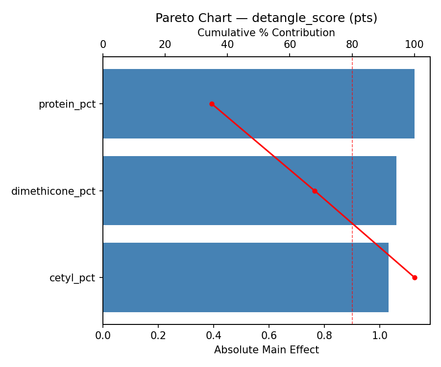
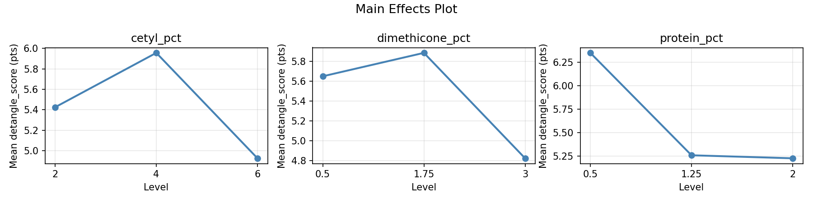
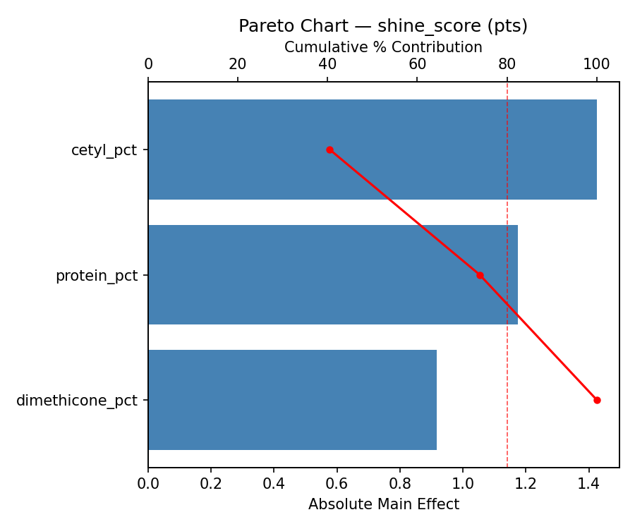
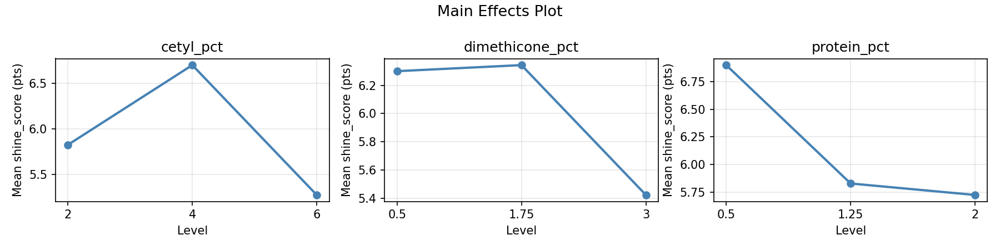
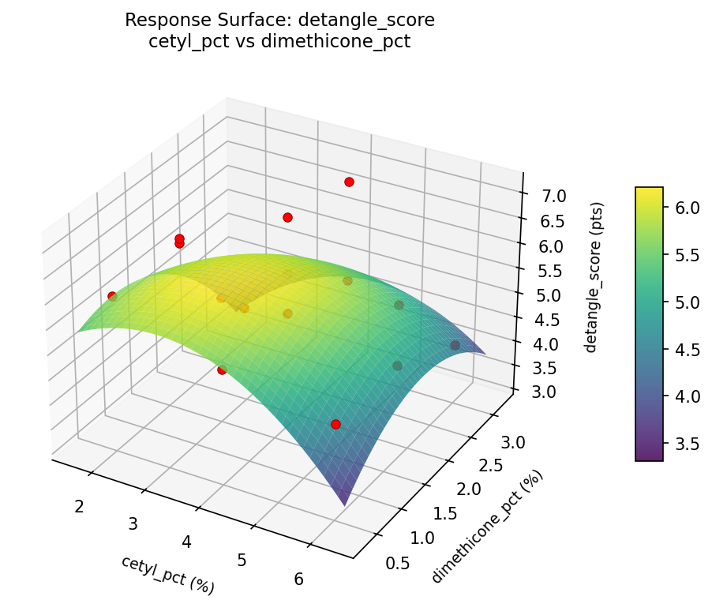
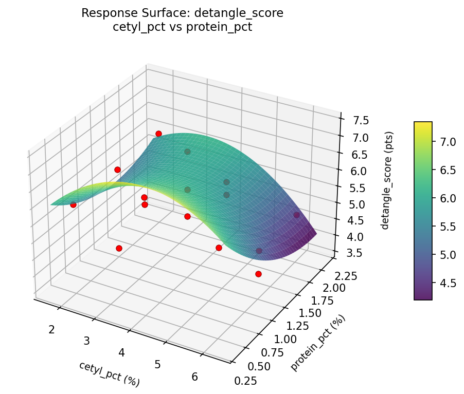
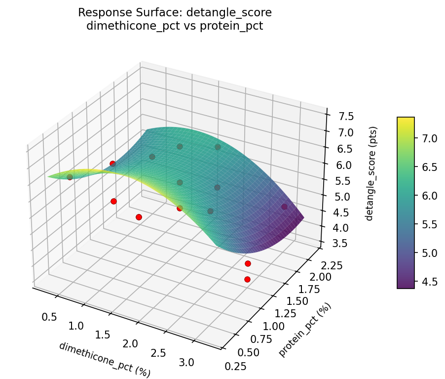
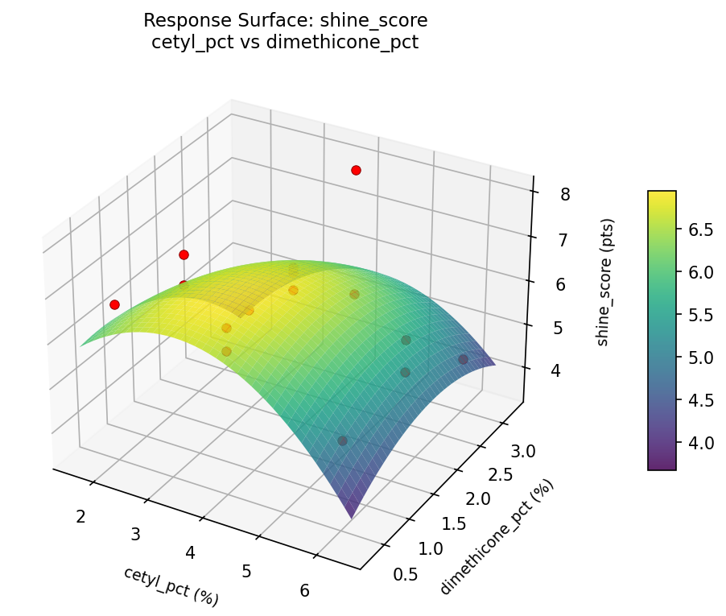
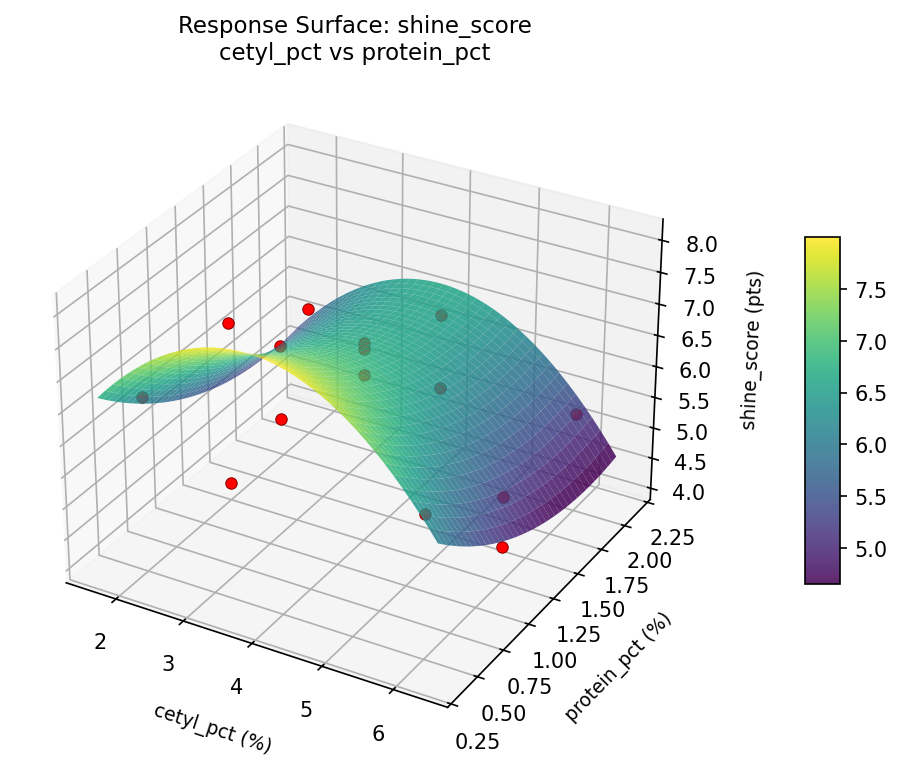
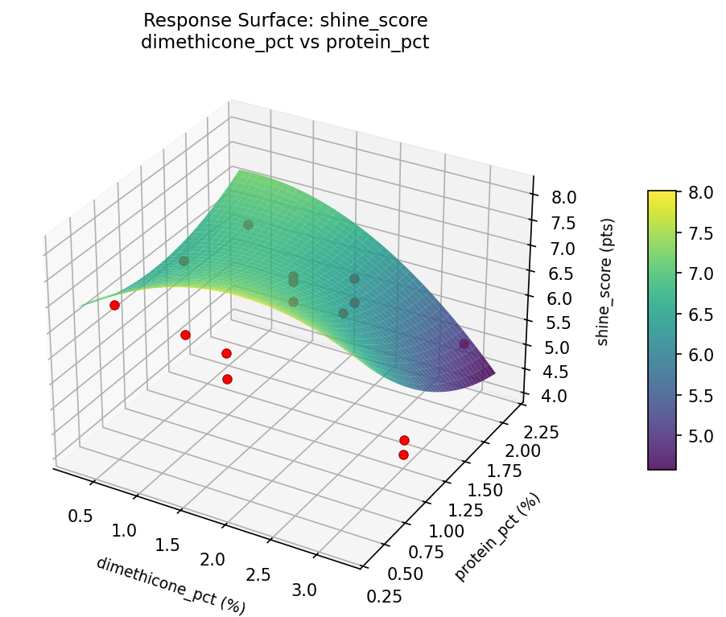

Summary
This experiment investigates hair conditioner formulation. Box-Behnken design to maximize detangling and shine by tuning cetyl alcohol, silicone dimethicone, and protein content.
The design varies 3 factors: cetyl pct (%), ranging from 2 to 6, dimethicone pct (%), ranging from 0.5 to 3.0, and protein pct (%), ranging from 0.5 to 2.0. The goal is to optimize 2 responses: detangle score (pts) (maximize) and shine score (pts) (maximize). Fixed conditions held constant across all runs include base ph = 4.5, preservative = standard.
A Box-Behnken design was chosen because it efficiently fits quadratic models with 3 continuous factors while avoiding extreme corner combinations — requiring only 15 runs instead of the 8 needed for a full factorial at two levels.
Quadratic response surface models were fitted to capture potential curvature and factor interactions. The RSM contour plots below visualize how pairs of factors jointly affect each response.
Key Findings
For detangle score, the most influential factors were protein pct (35.0%), dimethicone pct (33.0%), cetyl pct (32.1%). The best observed value was 7.1 (at cetyl pct = 4, dimethicone pct = 3, protein pct = 2).
For shine score, the most influential factors were cetyl pct (40.5%), protein pct (33.4%), dimethicone pct (26.1%). The best observed value was 8.0 (at cetyl pct = 4, dimethicone pct = 1.75, protein pct = 1.25).
Recommended Next Steps
- Run confirmation experiments at the predicted optimal settings to validate the model.
- Consider whether any fixed factors should be varied in a future study.
Experimental Setup
Factors
| Factor | Low | High | Unit |
|---|
cetyl_pct | 2 | 6 | % |
dimethicone_pct | 0.5 | 3.0 | % |
protein_pct | 0.5 | 2.0 | % |
Fixed: base_ph = 4.5, preservative = standard
Responses
| Response | Direction | Unit |
|---|
detangle_score | ↑ maximize | pts |
shine_score | ↑ maximize | pts |
Configuration
{
"metadata": {
"name": "Hair Conditioner Formulation",
"description": "Box-Behnken design to maximize detangling and shine by tuning cetyl alcohol, silicone dimethicone, and protein content"
},
"factors": [
{
"name": "cetyl_pct",
"levels": [
"2",
"6"
],
"type": "continuous",
"unit": "%"
},
{
"name": "dimethicone_pct",
"levels": [
"0.5",
"3.0"
],
"type": "continuous",
"unit": "%"
},
{
"name": "protein_pct",
"levels": [
"0.5",
"2.0"
],
"type": "continuous",
"unit": "%"
}
],
"fixed_factors": {
"base_ph": "4.5",
"preservative": "standard"
},
"responses": [
{
"name": "detangle_score",
"optimize": "maximize",
"unit": "pts"
},
{
"name": "shine_score",
"optimize": "maximize",
"unit": "pts"
}
],
"settings": {
"operation": "box_behnken",
"test_script": "use_cases/223_hair_conditioner/sim.sh"
}
}
Experimental Matrix
The Box-Behnken Design produces 15 runs. Each row is one experiment with specific factor settings.
| Run | cetyl_pct | dimethicone_pct | protein_pct |
|---|
| 1 | 4 | 0.5 | 0.5 |
| 2 | 4 | 1.75 | 1.25 |
| 3 | 6 | 1.75 | 2 |
| 4 | 6 | 1.75 | 0.5 |
| 5 | 4 | 1.75 | 1.25 |
| 6 | 4 | 1.75 | 1.25 |
| 7 | 2 | 1.75 | 2 |
| 8 | 6 | 0.5 | 1.25 |
| 9 | 4 | 0.5 | 2 |
| 10 | 6 | 3 | 1.25 |
| 11 | 2 | 1.75 | 0.5 |
| 12 | 4 | 3 | 2 |
| 13 | 2 | 0.5 | 1.25 |
| 14 | 2 | 3 | 1.25 |
| 15 | 4 | 3 | 0.5 |
Step-by-Step Workflow
1
Preview the design
$ python doe.py info --config use_cases/223_hair_conditioner/config.json
2
Generate the runner script
$ python doe.py generate --config use_cases/223_hair_conditioner/config.json \
--output use_cases/223_hair_conditioner/results/run.sh --seed 42
3
Execute the experiments
$ bash use_cases/223_hair_conditioner/results/run.sh
4
Analyze results
$ python doe.py analyze --config use_cases/223_hair_conditioner/config.json
5
Get optimization recommendations
$ python doe.py optimize --config use_cases/223_hair_conditioner/config.json
6
Generate the HTML report
$ python doe.py report --config use_cases/223_hair_conditioner/config.json \
--output use_cases/223_hair_conditioner/results/report.html
Features Exercised
| Feature | Value |
|---|
| Design type | box_behnken |
| Factor types | continuous (all 3) |
| Arg style | double-dash |
| Responses | 2 (detangle_score ↑, shine_score ↑) |
| Total runs | 15 |
Analysis Results
Generated from actual experiment runs using the DOE Helper Tool.
Response: detangle_score
Top factors: protein_pct (35.0%), dimethicone_pct (33.0%), cetyl_pct (32.1%).
Pareto Chart

Main Effects Plot

Response: shine_score
Top factors: cetyl_pct (40.5%), protein_pct (33.4%), dimethicone_pct (26.1%).
Pareto Chart

Main Effects Plot

Response Surface Plots
3D surfaces fitted with quadratic RSM. Red dots are observed data points.
detangle score cetyl pct vs dimethicone pct

detangle score cetyl pct vs protein pct

detangle score dimethicone pct vs protein pct

shine score cetyl pct vs dimethicone pct

shine score cetyl pct vs protein pct

shine score dimethicone pct vs protein pct

Full Analysis Output
RSM surface: rsm_detangle_score_cetyl_pct_vs_dimethicone_pct.png
RSM surface: rsm_detangle_score_cetyl_pct_vs_protein_pct.png
RSM surface: rsm_detangle_score_dimethicone_pct_vs_protein_pct.png
RSM surface: rsm_shine_score_cetyl_pct_vs_dimethicone_pct.png
RSM surface: rsm_shine_score_cetyl_pct_vs_protein_pct.png
RSM surface: rsm_shine_score_dimethicone_pct_vs_protein_pct.png
=== Main Effects: detangle_score ===
Factor Effect Std Error % Contribution
--------------------------------------------------------------
protein_pct 1.1250 0.2583 35.0%
dimethicone_pct 1.0607 0.2583 33.0%
cetyl_pct 1.0321 0.2583 32.1%
=== Summary Statistics: detangle_score ===
cetyl_pct:
Level N Mean Std Min Max
------------------------------------------------------------
2 4 5.4250 1.2176 3.6000 6.1000
4 7 5.9571 0.9053 4.8000 7.1000
6 4 4.9250 0.7890 4.1000 6.0000
dimethicone_pct:
Level N Mean Std Min Max
------------------------------------------------------------
0.5 4 5.6500 0.8062 4.8000 6.6000
1.75 7 5.8857 0.7313 4.8000 7.1000
3 4 4.8250 1.4056 3.6000 6.8000
protein_pct:
Level N Mean Std Min Max
------------------------------------------------------------
0.5 4 6.3500 0.4123 6.0000 6.8000
1.25 7 5.2571 1.2109 3.6000 7.1000
2 4 5.2250 0.6131 4.8000 6.1000
=== Main Effects: shine_score ===
Factor Effect Std Error % Contribution
--------------------------------------------------------------
cetyl_pct 1.4250 0.2725 40.5%
protein_pct 1.1750 0.2725 33.4%
dimethicone_pct 0.9179 0.2725 26.1%
=== Summary Statistics: shine_score ===
cetyl_pct:
Level N Mean Std Min Max
------------------------------------------------------------
2 4 5.8250 1.2038 4.1000 6.7000
4 7 6.7000 0.8406 5.2000 8.0000
6 4 5.2750 0.6994 4.4000 6.1000
dimethicone_pct:
Level N Mean Std Min Max
------------------------------------------------------------
0.5 4 6.3000 0.7616 5.2000 6.9000
1.75 7 6.3429 0.5740 5.4000 7.0000
3 4 5.4250 1.7783 4.1000 8.0000
protein_pct:
Level N Mean Std Min Max
------------------------------------------------------------
0.5 4 6.9000 0.8042 6.1000 8.0000
1.25 7 5.8286 1.2352 4.1000 7.0000
2 4 5.7250 0.5377 5.2000 6.4000
Pareto chart (detangle_score): use_cases/223_hair_conditioner/results/analysis/pareto_detangle_score.png
Pareto chart (shine_score): use_cases/223_hair_conditioner/results/analysis/pareto_shine_score.png
Main effects (detangle_score): use_cases/223_hair_conditioner/results/analysis/main_effects_detangle_score.png
Main effects (shine_score): use_cases/223_hair_conditioner/results/analysis/main_effects_shine_score.png
Optimization Recommendations
=== Optimization: detangle_score ===
Direction: maximize
Best observed run: #10
cetyl_pct = 4
dimethicone_pct = 3
protein_pct = 2
Value: 7.1
RSM Model (linear, R² = 0.0674, Adj R² = -0.1869):
Coefficients:
intercept +5.5400
cetyl_pct -0.3250
dimethicone_pct -0.0500
protein_pct +0.1000
RSM Model (quadratic, R² = 0.4560, Adj R² = -0.5233):
Coefficients:
intercept +6.3000
cetyl_pct -0.3250
dimethicone_pct -0.0500
protein_pct +0.1000
cetyl_pct*dimethicone_pct +0.5000
cetyl_pct*protein_pct +0.1500
dimethicone_pct*protein_pct +0.5500
cetyl_pct^2 -0.7250
dimethicone_pct^2 -0.0750
protein_pct^2 -0.6250
Curvature analysis:
cetyl_pct coef=-0.7250 concave (has a maximum)
protein_pct coef=-0.6250 concave (has a maximum)
dimethicone_pct coef=-0.0750 negligible curvature
Notable interactions:
dimethicone_pct*protein_pct coef=+0.5500 (synergistic)
cetyl_pct*dimethicone_pct coef=+0.5000 (synergistic)
Predicted optimum (from linear model):
cetyl_pct = 2
dimethicone_pct = 1.75
protein_pct = 2
Predicted value: 5.9650
Model quality: Weak fit — consider adding center points or using a different design.
Factor importance:
1. cetyl_pct (effect: 1.0, contribution: 56.6%)
2. protein_pct (effect: 0.7, contribution: 37.8%)
3. dimethicone_pct (effect: 0.1, contribution: 5.7%)
=== Optimization: shine_score ===
Direction: maximize
Best observed run: #12
cetyl_pct = 4
dimethicone_pct = 1.75
protein_pct = 1.25
Value: 8.0
RSM Model (linear, R² = 0.0957, Adj R² = -0.1509):
Coefficients:
intercept +6.0867
cetyl_pct -0.1625
dimethicone_pct -0.3875
protein_pct -0.1000
RSM Model (quadratic, R² = 0.4827, Adj R² = -0.4486):
Coefficients:
intercept +6.6667
cetyl_pct -0.1625
dimethicone_pct -0.3875
protein_pct -0.1000
cetyl_pct*dimethicone_pct +0.4250
cetyl_pct*protein_pct +0.1000
dimethicone_pct*protein_pct +0.7500
cetyl_pct^2 -0.6208
dimethicone_pct^2 +0.1792
protein_pct^2 -0.6458
Curvature analysis:
protein_pct coef=-0.6458 concave (has a maximum)
cetyl_pct coef=-0.6208 concave (has a maximum)
dimethicone_pct coef=+0.1792 convex (has a minimum)
Notable interactions:
dimethicone_pct*protein_pct coef=+0.7500 (synergistic)
cetyl_pct*dimethicone_pct coef=+0.4250 (synergistic)
Predicted optimum (from linear model):
cetyl_pct = 2
dimethicone_pct = 0.5
protein_pct = 1.25
Predicted value: 6.6367
Model quality: Weak fit — consider adding center points or using a different design.
Factor importance:
1. dimethicone_pct (effect: 0.8, contribution: 34.6%)
2. cetyl_pct (effect: 0.7, contribution: 33.5%)
3. protein_pct (effect: 0.7, contribution: 31.9%)